OBHOY · FOUNDER & PRESIDENT
Leading for safety
Founder & President of Obhoy, advancing women and child safety through awareness, advocacy and community engagement.
PERSONAL PORTFOLIO · DHAKA, BANGLADESH
Democracy Activist · Woman & Child Safety Advocate · Youth Leader · Public Speaker
A young professional building her journey through democratic values, women and child safety advocacy, youth leadership, communication, community engagement and continuous learning.
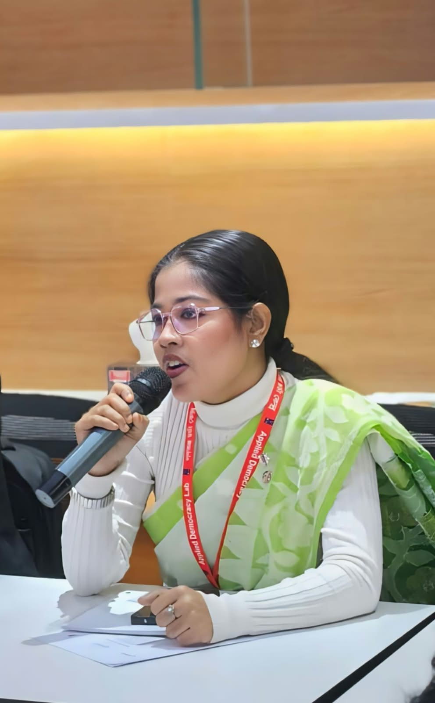
WHO IS SADIA JAHAN TUBA?
Sadia Jahan Tuba is a student and emerging professional from Dhaka, Bangladesh, whose profile brings together democracy activism, women and child safety advocacy, youth leadership, public speaking, volunteerism, creativity and digital marketing.
Through her involvement in youth and volunteer organizations, she has developed practical experience in leadership, team coordination, event management, communication, presentation and community engagement. She is also the Founder & President of Obhoy, an initiative focused on women and child safety, awareness and community-centered advocacy.
Her interests also extend to creative design, social media marketing and entrepreneurship — combining people skills with a growing digital and professional skill set.
EXPERIENCE & INVOLVEMENT
Her leadership journey is shaped by taking responsibility, speaking with confidence, working with teams and contributing to youth, safety and community initiatives.
Founder & President of Obhoy, advancing women and child safety through awareness, advocacy and community engagement.
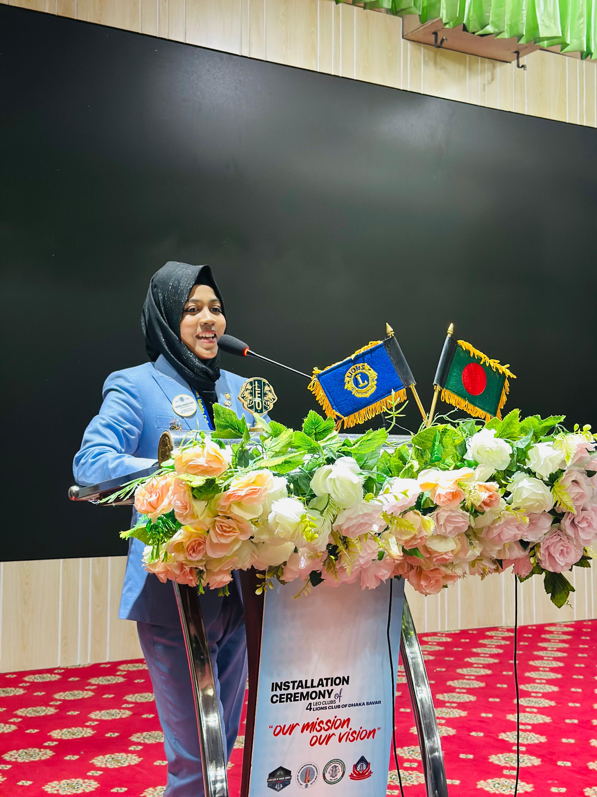
Building confidence through organizational roles, coordination and public representation.
Sharing ideas and connecting with young people through speaking and youth platforms.
Growing through leadership programs, collaboration, service and peer engagement.
Leading an initiative centered on women and child safety, awareness, advocacy and community engagement.
Leadership, club coordination, member engagement, programs and community activities.
District-level responsibility involving coordination, reporting and financial management.
Volunteer experiences that strengthened discipline, teamwork, communication and responsibility.
A VOICE FOR PARTICIPATION
As a Democracy Activist and Woman & Child Safety Advocate, Sadia is interested in youth participation, civic awareness, dialogue, safety and the values that help communities become more informed, protected and engaged.
Encouraging young people to express ideas, perspectives and aspirations.
Supporting awareness, dialogue and responsible participation in society.
Valuing respectful conversation, listening and different perspectives.
Supporting awareness, advocacy and community action around the safety and wellbeing of women and children.
WHAT SHE BRINGS
SELECTED MOMENTS
A visual look at leadership, service, speaking engagements and community moments.
ACHIEVEMENTS & RECOGNITION
Recognitions and certifications earned through leadership, training and community work.
COLLABORATION · SERVICE · LEADERSHIP
A curated network of organizations, clubs and initiatives connected to Sadia's leadership, volunteer and professional journey. Select any logo to visit its official page.
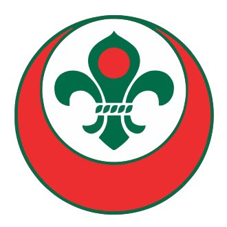
World Organization of the Scout Movement↗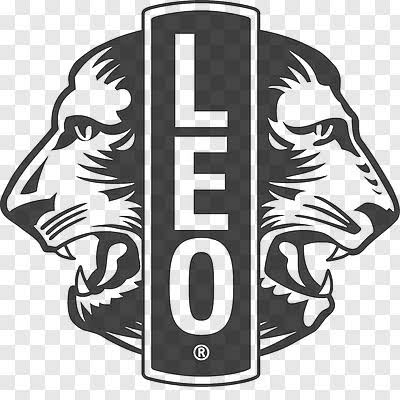
Leo Clubs International↗ BNCC↗ ATAS↗ Rotaract International↗ ADL · University of Dhaka↗ Talk Hope↗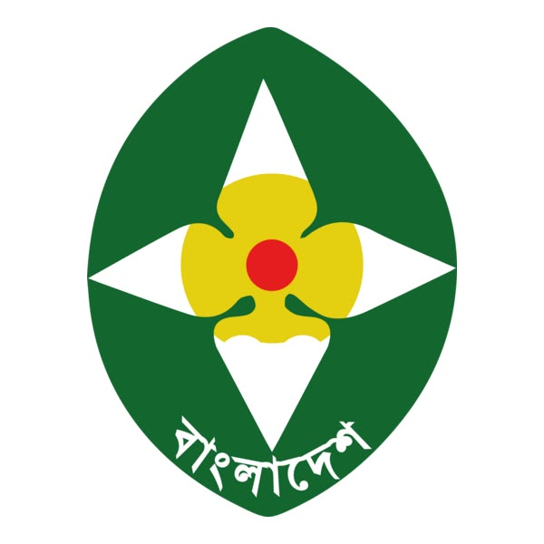
Bangladesh Girl Guides Association↗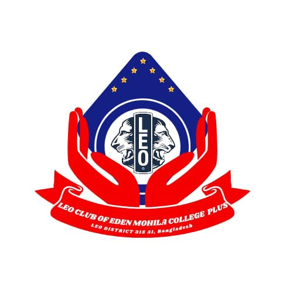
Leo Club of Eden Mohila College Plus↗ Bangladesh Scouts↗ Career Nest↗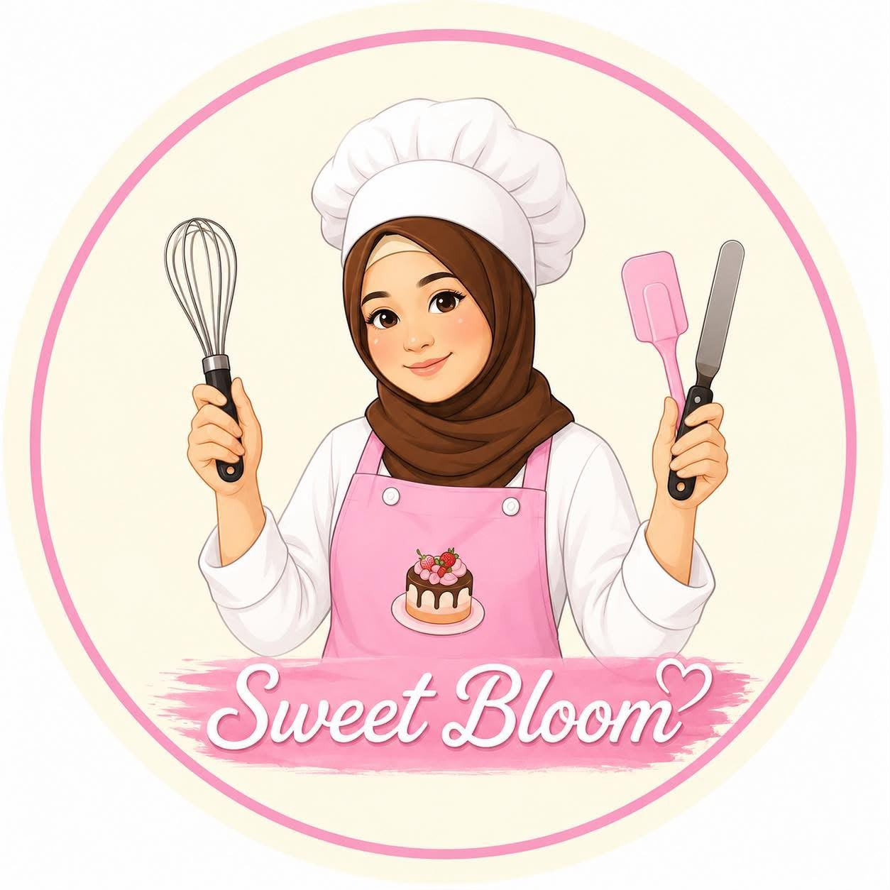
Sweet Bloom↗ Nirman Architecture & Development↗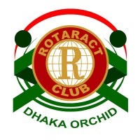
Rotaract Club of Dhaka Orchid↗ SHADOW↗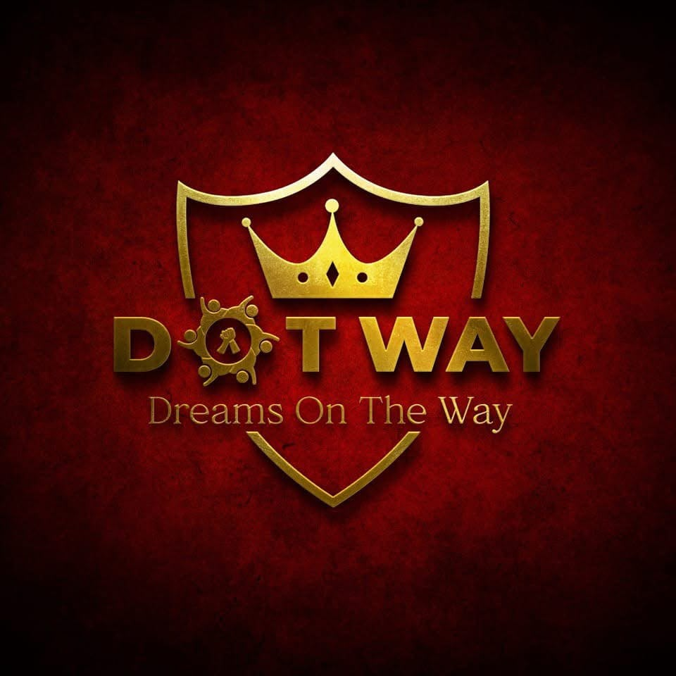
Dot Way↗ Amateur Radio Society of Bangladesh↗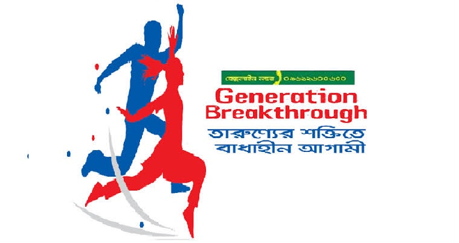
Generation Breakthrough↗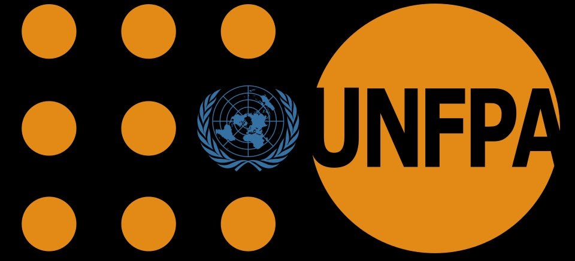
UNFPA↗ SAVE · Students Against Violence Everywhere↗
SAVE · Students Against Violence Everywhere↗
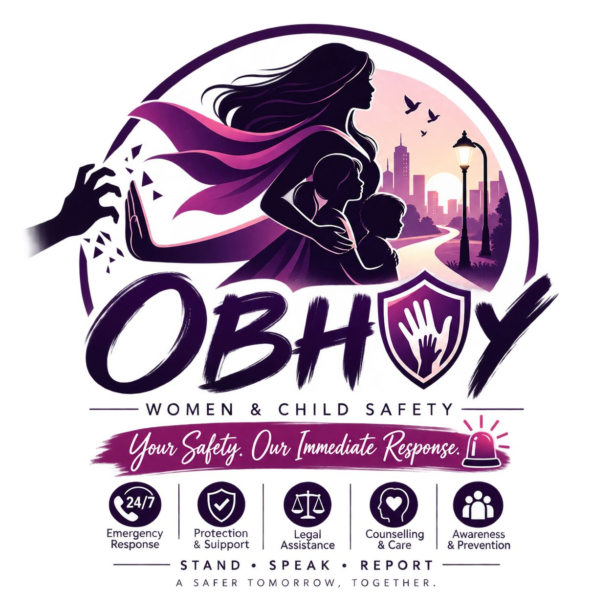
Obhoy · Women & Child Safety↗